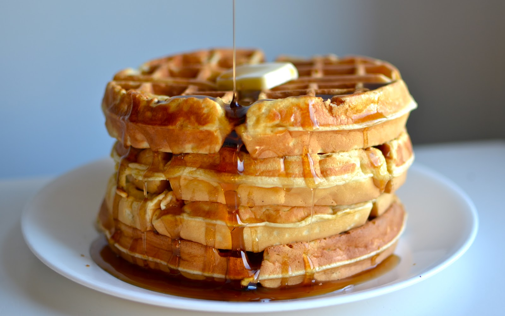

Leslie is a proud member of numerous action committees in and around City Hall, including, but not limited to: the Equal Opportunity Committee, the Fun in the Sun Committee, the Clean Restroom Task Force, the Increased Access to Restrooms Task Force, the Handicapped Restroom Task Force, the Committee for Repainting Handicapped Parking Spaces Task Force and the Task Force to Reduce the Number of Public Restrooms.
Leslie graduated in the top 5% of her class at Pawnee North High School. She was Co-Vice President of the student body and a member of Model United Nations, Key Club, Debate Club, Mock Trial, Young Republicans, Young Democrats, Young Independents (founding member), Drama Club, Historical Society, Orchestra, Color Guard and junior varsity field hockey.
Leslie's interests include, but are not limited to: